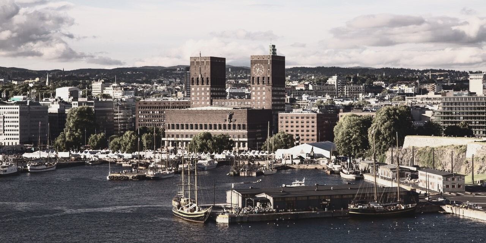

Utforsk Oslo på en ny måte!
Velkommen til din guide til Oslo, hvor vi har samlet de beste tipsene innen fire spennende kategorier. Enten du er ute etter å oppdage Oslos skjulte perler, finne en hyggelig kafé, oppleve byens kulturattraksjoner eller utforske det pulserende utelivet, har vi noe for alle. La deg inspirere og gjør deg klar til å utforske Oslo fra et nytt perspektiv!


Uteliv

Utforsk Oslos fantastiske uteliv! Utforsk byens spennende uteliv! Uansett om du liker eksklusive cocktailbarer, livlige klubber eller koselige puber, finnes det noe for enhver smak.
Kafé
Nyt en avslappende stund på en av byens mange kaféer. Enten du foretrekker en kopp kaffe, te, eller kanskje noe søtt ved siden av, finner du et sted som passer din stil.
Attraksjoner
Oslo er hjem til mange spennende og ikoniske attraksjoner. Byen har mange ikoniske og spennende attraksjoner! Oppdag vakre parker, imponerende museer og historiske monumenter som gir innblikk i kultur og historie.
Aktiviteter

Oslo tilbyr et bredt utvalg av aktiviteter for alle aldre og interesser. Det finnes aktiviteter for alle interesser! Fra naturopplevelser i skog og mark til urbane eventyr og sportsaktiviteter – her er det mye å utforske året rundt.
Budsjettvennlig

Oslo trenger ikke å være dyrt! Hvis du er ute etter rimelige opplevelser, finnes det mange steder som tilbyr fantastisk verdi. Oppdag gratis opplevelser, rimelige spiseplasser og vakre utendørsområder som byr på flotte opplevelser.
Kafé

Nyt en avslappende stund på en av byens mange kaféer. Enten du foretrekker en kopp kaffe, te, eller kanskje noe søtt ved siden av, finner du et sted som passer din stil.
Attraksjoner

Oslo er hjem til mange spennende og ikoniske attraksjoner. Byen har mange ikoniske og spennende attraksjoner! Oppdag vakre parker, imponerende museer og historiske monumenter som gir innblikk i kultur og historie.
Aktiviteter
Oslo tilbyr et bredt utvalg av aktiviteter for alle aldre og interesser. Det finnes aktiviteter for alle interesser! Fra naturopplevelser i skog og mark til urbane eventyr og sportsaktiviteter – her er det mye å utforske året rundt.
Budsjettvennlig
Oslo trenger ikke å være dyrt! Hvis du er ute etter rimelige opplevelser, finnes det mange steder som tilbyr fantastisk verdi. Oppdag gratis opplevelser, rimelige spiseplasser og vakre utendørsområder som byr på flotte opplevelser.
>>>>>>> parent of a842995 (fixed pic links)